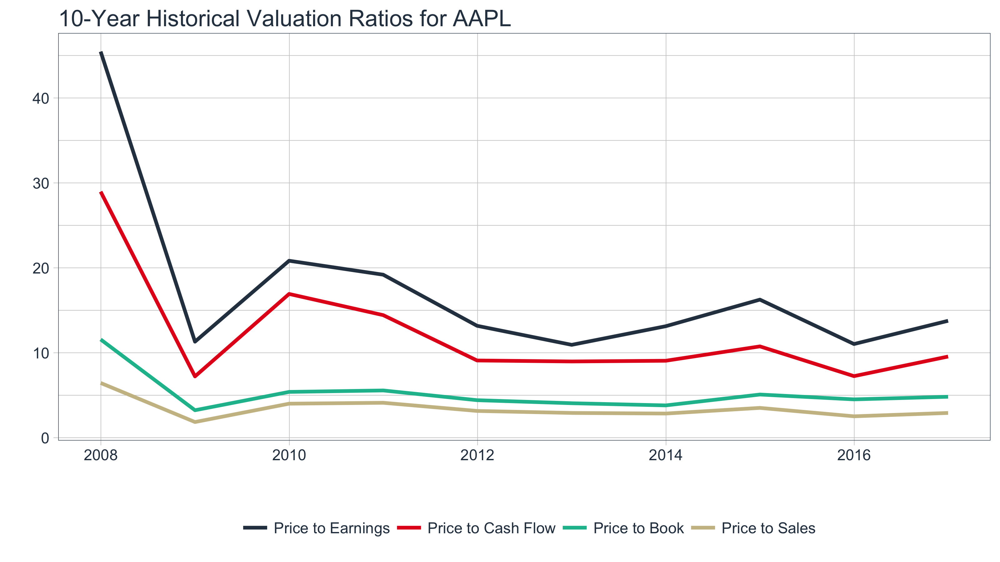

A few core functions with a lot of power
The tidyquant package has a core functions with a lot of power. Few functions means less of a learning curve for the user, which is why there are only a handful of functions the user needs to learn to perform the vast majority of financial analysis tasks. The main functions are:
Get a Stock Index, tq_index(), or a Stock Exchange, tq_exchange(): Returns the stock symbols and various attributes for every stock in an index or exchange. Eighteen indexes and three exchanges are available.
Get Quantitative Data, tq_get(): A one-stop shop to get data from various web-sources.
Transmute, tq_transmute(), and Mutate, tq_mutate(), Quantitative Data: Perform and scale financial calculations completely within the tidyverse. These workhorse functions integrate the xts, zoo, quantmod, and TTR packages.
Coerce Quantitative Data Between tibble and xts formats, as_tibble() and as_xts(): Coercing the various R time-based objects to and from tibble (tidy data frame) objects was a pain. These functions enable easily going back and forth.
Performance analysis, tq_performance(), and portfolio aggregation, tq_portfolio(): The PerformanceAnalytics integration enables analyzing performance of assets and portfolios. Because of the breadth of this topic, refer to Performance Analysis with tidyquant for a tutorial on these functions.
Load the tidyquant package to get started.
# Loads tidyquant, tidyverse, lubridate, xts, quantmod, TTR
library(tidyquant)A wide range of stock index / exchange lists can be retrieved using tq_index(). To get a full list of the options, use tq_index_options().
## [1] "DOWJONES" "DJI" "DJT" "DJU" "SP100"
## [6] "SP400" "SP500" "SP600" "RUSSELL1000" "RUSSELL2000"
## [11] "RUSSELL3000" "AMEX" "AMEXGOLD" "AMEXOIL" "NASDAQ"
## [16] "NASDAQ100" "NYSE" "SOX"Set x as one of the options in the list of options above to get the desired stock index / exchange.
tq_index("SP500")## # A tibble: 502 × 2
## symbol company
## <chr> <chr>
## 1 MMM 3M
## 2 ABT ABBOTT LABORATORIES
## 3 ABBV ABBVIE INC
## 4 ACN ACCENTURE
## 5 ATVI ACTIVISION BLIZZARD
## 6 AYI ACUITY BRANDS
## 7 ADBE ADOBE SYSTEMS
## 8 AAP ADVANCE AUTO PARTS
## 9 AET AETNA
## 10 AMG AFFILIATED MANAGERS GROUP
## # ... with 492 more rowsThe data source is www.marketvolume.com.
Stock lists for three stock exchanges are available: NASDAQ, NYSE, and AMEX. If you forget, just use tq_exchange_options(). We can easily get the full list of stocks on the NASDAQ exchange.
tq_exchange("NASDAQ")## # A tibble: 3,191 × 7
## symbol company last.sale.price
## <chr> <chr> <dbl>
## 1 PIH 1347 Property Insurance Holdings, Inc. 7.30
## 2 TURN 180 Degree Capital Corp. 1.44
## 3 FLWS 1-800 FLOWERS.COM, Inc. 10.75
## 4 FCCY 1st Constitution Bancorp (NJ) 17.90
## 5 SRCE 1st Source Corporation 48.31
## 6 VNET 21Vianet Group, Inc. 5.41
## 7 TWOU 2U, Inc. 45.40
## 8 JOBS 51job, Inc. 40.99
## 9 CAFD 8point3 Energy Partners LP 12.36
## 10 EGHT 8x8 Inc 14.55
## # ... with 3,181 more rows, and 4 more variables: market.cap <chr>,
## # ipo.year <dbl>, sector <chr>, industry <chr>The data source is the NASDAQ.
The tq_get() function is used to collect data by changing the get argument. The options include stock prices, key statistics, dividends and splits from Yahoo Finance, key ratios from Morningstar, financial statements from Google Finance, metal prices and exchange rates from Oanda, and economic data from the FRED database. Use tq_get_options() to see the full list.
## [1] "stock.prices" "stock.prices.japan" "financials"
## [4] "key.stats" "key.ratios" "dividends"
## [7] "splits" "economic.data" "exchange.rates"
## [10] "metal.prices" "quandl" "quandl.datatable"The stock prices can be retrieved succinctly using get = "stock.prices".
aapl_prices <- tq_get("AAPL", get = "stock.prices", from = " 1990-01-01")
aapl_prices ## # A tibble: 6,886 × 7
## date open high low close volume adjusted
## <date> <dbl> <dbl> <dbl> <dbl> <dbl> <dbl>
## 1 1990-01-02 35.250 37.500 35.00 37.250 45799600 1.127188
## 2 1990-01-03 38.000 38.000 37.50 37.500 51998800 1.134753
## 3 1990-01-04 38.250 38.750 37.25 37.625 55378400 1.138535
## 4 1990-01-05 37.750 38.250 37.00 37.750 30828000 1.142318
## 5 1990-01-08 37.500 38.000 37.00 38.000 25393200 1.149883
## 6 1990-01-09 38.000 38.000 37.00 37.625 21534800 1.138535
## 7 1990-01-10 37.625 37.625 35.75 36.000 49929600 1.089363
## 8 1990-01-11 36.250 36.250 34.50 34.500 52763200 1.043972
## 9 1990-01-12 34.250 34.750 33.75 34.500 42974400 1.043972
## 10 1990-01-15 34.500 35.750 34.25 34.250 40434800 1.036407
## # ... with 6,876 more rowsYahoo Japan stock prices can be retrieved using a similar call, get = "stock.prices.japan".
x8411T <- tq_get("8411.T", get = "stock.prices.japan", from = "2016-01-01", to = "2016-12-31")Dividends are obtained using get = "dividends".
aapl_divs <- tq_get("AAPL", get = "dividends", from = "1990-01-01")
aapl_divs## # A tibble: 43 × 2
## date dividends
## <date> <dbl>
## 1 1990-02-16 0.00393
## 2 1990-05-21 0.00393
## 3 1990-08-20 0.00393
## 4 1990-11-16 0.00429
## 5 1991-02-15 0.00429
## 6 1991-05-20 0.00429
## 7 1991-08-19 0.00429
## 8 1991-11-18 0.00429
## 9 1992-02-14 0.00429
## 10 1992-06-01 0.00429
## # ... with 33 more rowsStock splits are obtained using get = "splits".
aapl_splits <- tq_get("AAPL", get = "splits", from = "1990-01-01")
aapl_splits## # A tibble: 3 × 2
## date splits
## <date> <dbl>
## 1 2000-06-21 0.5000000
## 2 2005-02-28 0.5000000
## 3 2014-06-09 0.1428571The data source is Yahoo Finance and Yahoo Finance Japan.
For any given stock, a total of six financials statements are retrieved as nested tibbles, one for each combination of statement type (Income Statement, Balance Sheet, and Cash Flow) and period (by annual and quarter).
aapl_financials <- tq_get("AAPL", get = "financials")
aapl_financials## # A tibble: 3 × 3
## type annual quarter
## * <chr> <list> <list>
## 1 BS <tibble [168 × 4]> <tibble [210 × 4]>
## 2 CF <tibble [76 × 4]> <tibble [95 × 4]>
## 3 IS <tibble [196 × 4]> <tibble [245 × 4]>The statement information can be extracted by selecting (dplyr::select()) and filtering (dplyr::filter()) to the desired statement and unnesting (tidyr::unnest()) the results.
aapl_financials %>%
filter(type == "IS") %>%
select(annual) %>%
unnest()## # A tibble: 196 × 4
## group category date value
## <int> <chr> <date> <dbl>
## 1 1 Revenue 2016-09-24 215639
## 2 1 Revenue 2015-09-26 233715
## 3 1 Revenue 2014-09-27 182795
## 4 1 Revenue 2013-09-28 170910
## 5 2 Other Revenue, Total 2016-09-24 NA
## 6 2 Other Revenue, Total 2015-09-26 NA
## 7 2 Other Revenue, Total 2014-09-27 NA
## 8 2 Other Revenue, Total 2013-09-28 NA
## 9 3 Total Revenue 2016-09-24 215639
## 10 3 Total Revenue 2015-09-26 233715
## # ... with 186 more rowsA slightly more powerful example is looking at all quarterly statements together. This is easy to do with unnest and spread from the tidyr package.
aapl_financials %>%
unnest(quarter) %>%
spread(key = date, value = value)## # A tibble: 110 × 8
## type group category `2015-12-26` `2016-03-26`
## * <chr> <int> <chr> <dbl> <dbl>
## 1 BS 1 Cash & Equivalents NA NA
## 2 BS 2 Short Term Investments 26922 45084
## 3 BS 3 Cash and Short Term Investments 38074 55283
## 4 BS 4 Accounts Receivable - Trade, Net 12953 12229
## 5 BS 5 Receivables - Other NA NA
## 6 BS 6 Total Receivables, Net 24621 19824
## 7 BS 7 Total Inventory 2451 2281
## 8 BS 8 Prepaid Expenses NA NA
## 9 BS 9 Other Current Assets, Total 11073 10204
## 10 BS 10 Total Current Assets 76219 87592
## # ... with 100 more rows, and 3 more variables: `2016-06-25` <dbl>,
## # `2016-09-24` <dbl>, `2016-12-31` <dbl>The data source is Google Finance.
The next two getters, key ratios and key stats, work in tandem. Key ratios provide the historical annual metrics on the stock / company for the last 10 years. Key stats provide the real-time metrics on the stock / company.
For any given stock, the historical key ratios are available for 10 years, and are classified into the following sections:
To get the key ratios:
aapl_key_ratios <- tq_get("AAPL", get = "key.ratios")
aapl_key_ratios## # A tibble: 7 × 2
## section data
## <chr> <list>
## 1 Financials <tibble [150 × 5]>
## 2 Profitability <tibble [170 × 5]>
## 3 Growth <tibble [160 × 5]>
## 4 Cash Flow <tibble [50 × 5]>
## 5 Financial Health <tibble [240 × 5]>
## 6 Efficiency Ratios <tibble [80 × 5]>
## 7 Valuation Ratios <tibble [40 × 5]>The ratios can be filtered and unnested to peel away the hierarchical nesting layers and access the underlying data:
aapl_key_ratios %>%
filter(section == "Valuation Ratios") %>%
unnest()## # A tibble: 40 × 6
## section sub.section group category date
## <chr> <chr> <dbl> <chr> <date>
## 1 Valuation Ratios Valuation Ratios 86 Price to Earnings 2007-12-31
## 2 Valuation Ratios Valuation Ratios 86 Price to Earnings 2008-12-31
## 3 Valuation Ratios Valuation Ratios 86 Price to Earnings 2009-12-31
## 4 Valuation Ratios Valuation Ratios 86 Price to Earnings 2010-12-31
## 5 Valuation Ratios Valuation Ratios 86 Price to Earnings 2011-12-30
## 6 Valuation Ratios Valuation Ratios 86 Price to Earnings 2012-12-31
## 7 Valuation Ratios Valuation Ratios 86 Price to Earnings 2013-12-31
## 8 Valuation Ratios Valuation Ratios 86 Price to Earnings 2014-12-31
## 9 Valuation Ratios Valuation Ratios 86 Price to Earnings 2015-12-31
## 10 Valuation Ratios Valuation Ratios 86 Price to Earnings 2016-12-30
## # ... with 30 more rows, and 1 more variables: value <dbl>Once we have a section, we can quickly visualize the ratios:
aapl_key_ratios %>%
filter(section == "Valuation Ratios") %>%
unnest() %>%
ggplot(aes(x = date, y = value)) +
geom_line(aes(col = forcats::fct_reorder2(category, date, value)),
size = 1) +
labs(title = "10-Year Historical Valuation Ratios for AAPL", x = "",
y = "", col = "") +
theme_tq() +
scale_color_tq()
The data source is Morningstar.
For any given stock, the current key statistics are available in real time. It’s quite a bit of information, with 55 real-time stats available, so we’ll just take a look at the column names.
aapl_key_stats <- tq_get("AAPL", get = "key.stats")
aapl_key_stats %>%
colnames() %>%
cat() # Print in condensed format## Ask Ask.Size Average.Daily.Volume Bid Bid.Size Book.Value Change Change.From.200.day.Moving.Average Change.From.50.day.Moving.Average Change.From.52.week.High Change.From.52.week.Low Change.in.Percent Currency Days.High Days.Low Days.Range Dividend.Pay.Date Dividend.per.Share Dividend.Yield EBITDA EPS EPS.Estimate.Current.Year EPS.Estimate.Next.Quarter EPS.Estimate.Next.Year Ex.Dividend.Date Float.Shares High.52.week Last.Trade.Date Last.Trade.Price.Only Last.Trade.Size Last.Trade.With.Time Low.52.week Market.Capitalization Moving.Average.200.day Moving.Average.50.day Name Open PE.Ratio PEG.Ratio Percent.Change.From.200.day.Moving.Average Percent.Change.From.50.day.Moving.Average Percent.Change.From.52.week.High Percent.Change.From.52.week.Low Previous.Close Price.to.Book Price.to.EPS.Estimate.Current.Year Price.to.EPS.Estimate.Next.Year Price.to.Sales Range.52.week Revenue Shares.Outstanding Short.Ratio Stock.Exchange Target.Price.1.yr. VolumeThe data is returned in wide format (as opposed to long format) because we can easily get the key stats for multiple stocks and pare down the list for comparisons. Here I use select to select several columns to compare.
c("AAPL", "FB", "GOOG") %>%
tq_get(get = "key.stats") %>%
select(symbol, Ask, Ask.Size, Bid, Bid.Size, Change, Days.High, Days.Low)## # A tibble: 3 × 8
## symbol Ask Ask.Size Bid Bid.Size Change Days.High Days.Low
## <chr> <dbl> <dbl> <dbl> <dbl> <dbl> <dbl> <dbl>
## 1 AAPL 146.88 600 146.87 400 3.2200 146.99 144.96
## 2 FB 152.22 1200 152.21 600 1.9645 152.50 151.42
## 3 GOOG 912.80 100 912.36 100 6.6100 913.09 901.45Finally, because the statistics are real-time, we can setup real-time monitoring by calling tq_get at periodic intervals. The function below is not evaluated for time considerations, but if called during active trading sessions will collect five samples at three second intervals.
# Not evaluated; When run during active trading, will return real-time values
collect_real_time_data <- function(x, interval_sec, n) {
data <- tibble()
while (n > 0) {
data <- bind_rows(data, tq_get(x, get = "key.stats"))
Sys.sleep(interval_sec)
n <- n - 1
}
return(data)
}
collect_real_time_data("AAPL", interval_sec = 3, n = 5) %>%
select(Ask, Ask.Size, Bid, Bid.Size, Open, Change)The data source is Yahoo Finance.
Quandl provides access to a vast number of financial and economic databases. The Quandl package has been integrated into tidyquant as follows.
To make full use of the integration we recommend you set your api key. To do this create or sign into your Quandl account and go to your account api key page.
quandl_api_key("enter-your-api-key-here")Searching Quandl from within the R console is possible with quandl_search(), a wrapper for Quandl::Quandl.search(). An example search is shown below. The only required argument is query. You can also visit the Quandl Search webpage to search for available database codes.
quandl_search(query = "Oil", database_code = "NSE", per_page = 3)Getting data is integrated into tq_get(). Two get options exist to retrieve Quandl data:
get = "quandl": Get’s Quandl time series data. A wrapper for Quandl().get = "quandl.datatable": Gets Quandl datatables (larger data sets that may not be time series). A wrapper for Quandl.datatable().Getting data from Quandl can be achieved in much the same way as the other “get” options. Just pass the “codes” for the data along with desired arguments for the underlying function.
The following uses get = "quandl" and the “WIKI” database to download daily stock prices for FB and AAPL in 2016. The output is a tidy data frame.
c("WIKI/FB", "WIKI/AAPL") %>%
tq_get(get = "quandl",
from = "2016-01-01",
to = "2016-12-31")The following time series options are available to be passed to the underlying Quandl() function:
start_date (from) = “yyyy-mm-dd” | end_date (to) = “yyyy-mm-dd”column_index = numeric column number (e.g. 1)rows = numeric row number indicating first n rows (e.g. 100)collapse = “none”, “daily”, “weekly”, “monthly”, “quarterly”, “annual”transform = “none”, “diff”, “rdiff”, “cumul”, “normalize”Here’s an example to get period returns of the adj.close (column index 11) using the column_index, collapse and transform arguments.
c("WIKI/FB", "WIKI/AAPL") %>%
tq_get(get = "quandl",
from = "2007-01-01",
to = "2016-12-31",
column_index = 11,
collapse = "annual",
transform = "rdiff") Datatables are larger data sets. These can be downloaded using get = "quandl.datatable". Note that the time series arguments do not work with data tables.
Here’s several examples of Zacks Fundamentals Collection B
# Zacks Fundamentals Collection B (DOW 30 Available to non subscribers)
tq_get("ZACKS/FC", get = "quandl.datatable") # Zacks Fundamentals Condensed
tq_get("ZACKS/FR", get = "quandl.datatable") # Zacks Fundamental Ratios
tq_get("ZACKS/MT", get = "quandl.datatable") # Zacks Master Table
tq_get("ZACKS/MKTV", get = "quandl.datatable") # Zacks Market Value Supplement
tq_get("ZACKS/SHRS", get = "quandl.datatable") # Zacks Shares Out SupplementA wealth of economic data can be extracted from the Federal Reserve Economic Data (FRED) database. The WTI Crude Oil Prices are shown below.
wti_price_usd <- tq_get("DCOILWTICO", get = "economic.data")
wti_price_usd ## # A tibble: 2,691 × 2
## date price
## <date> <dbl>
## 1 2007-01-01 NA
## 2 2007-01-02 60.77
## 3 2007-01-03 58.31
## 4 2007-01-04 55.65
## 5 2007-01-05 56.29
## 6 2007-01-08 56.08
## 7 2007-01-09 55.65
## 8 2007-01-10 53.95
## 9 2007-01-11 51.91
## 10 2007-01-12 52.96
## # ... with 2,681 more rowsThe FRED contains literally over 10K data sets that are free to use. See the FRED categories to narrow down the data base and to get data codes.
Exchange rates are entered as currency pairs using “/” notation (e.g "EUR/USD"), and by setting get = "exchange.rates".
eur_usd <- tq_get("EUR/USD",
get = "exchange.rates",
from = Sys.Date() - lubridate::days(10))
eur_usd ## # A tibble: 10 × 2
## date exchange.rate
## <date> <dbl>
## 1 2017-04-21 1.070845
## 2 2017-04-22 1.072660
## 3 2017-04-23 1.072660
## 4 2017-04-24 1.085785
## 5 2017-04-25 1.089135
## 6 2017-04-26 1.091080
## 7 2017-04-27 1.089470
## 8 2017-04-28 1.089125
## 9 2017-04-29 1.089620
## 10 2017-04-30 1.089620The data source is Oanda, and list of currencies to compare can be found on Oanda’s currency converter. It may make more sense to get this data from the FRED (See Economic Data) since the max period for Oanda is 180 days.
Metal prices are very similar to stock prices. Set get = "metal.prices" along with the appropriate commodity symbol (e.g. XAU (gold) , XAG (silver), XPD (palladium), or XPT (platinum)).
plat_price_eur <- tq_get("plat", get = "metal.prices",
from = Sys.Date() - lubridate::days(10),
base.currency = "EUR")
plat_price_eur ## # A tibble: 10 × 2
## date price
## <date> <dbl>
## 1 2017-04-21 910.8295
## 2 2017-04-22 909.2889
## 3 2017-04-23 902.5491
## 4 2017-04-24 888.4565
## 5 2017-04-25 879.0376
## 6 2017-04-26 872.3348
## 7 2017-04-27 869.1886
## 8 2017-04-28 870.1458
## 9 2017-04-29 869.7509
## 10 2017-04-30 870.7404The data source is Oanda. It may make more sense to get this data from the FRED (See Economic Data) since the max period for Oanda is 180 days.
Mutating functions enable the xts/zoo, quantmod and TTR functions to shine. We’ll touch on the mutation functions briefly using the FANG data set, which consists of daily prices for FB, AMZN, GOOG, and NFLX from the beginning of 2013 to the end of 2016. We’ll apply the functions to grouped data sets to get a feel for how each works
data(FANG)
FANG## # A tibble: 4,032 × 8
## symbol date open high low close volume adjusted
## <chr> <date> <dbl> <dbl> <dbl> <dbl> <dbl> <dbl>
## 1 FB 2013-01-02 27.44 28.18 27.42 28.00 69846400 28.00
## 2 FB 2013-01-03 27.88 28.47 27.59 27.77 63140600 27.77
## 3 FB 2013-01-04 28.01 28.93 27.83 28.76 72715400 28.76
## 4 FB 2013-01-07 28.69 29.79 28.65 29.42 83781800 29.42
## 5 FB 2013-01-08 29.51 29.60 28.86 29.06 45871300 29.06
## 6 FB 2013-01-09 29.67 30.60 29.49 30.59 104787700 30.59
## 7 FB 2013-01-10 30.60 31.45 30.28 31.30 95316400 31.30
## 8 FB 2013-01-11 31.28 31.96 31.10 31.72 89598000 31.72
## 9 FB 2013-01-14 32.08 32.21 30.62 30.95 98892800 30.95
## 10 FB 2013-01-15 30.64 31.71 29.88 30.10 173242600 30.10
## # ... with 4,022 more rowsFor a detailed walkthrough of the compatible functions, see the next vignette in the series, R Quantitative Analysis Package Integrations in tidyquant.
Transmute the results of tq_get(). Transmute here holds almost the same meaning as in dplyr, only the newly created columns will be returned, but with tq_transmute(), the number of rows returned can be different than the original data frame. This is important for changing periodicity. An example is periodicity aggregation from daily to monthly.
FANG %>%
group_by(symbol) %>%
tq_transmute(select = adjusted, mutate_fun = to.monthly)## Source: local data frame [192 x 3]
## Groups: symbol [4]
##
## symbol date adjusted
## <chr> <chr> <dbl>
## 1 FB Jan 2013 30.98
## 2 FB Feb 2013 27.25
## 3 FB Mar 2013 25.58
## 4 FB Apr 2013 27.77
## 5 FB May 2013 24.35
## 6 FB Jun 2013 24.88
## 7 FB Jul 2013 36.80
## 8 FB Aug 2013 41.29
## 9 FB Sep 2013 50.23
## 10 FB Oct 2013 50.21
## # ... with 182 more rowsLet’s go through what happened. select allows you to easily choose what columns get passed to mutate_fun. In example above, adjusted selects the “adjusted” column from data, and sends it to the mutate function, to.monthly, which mutates the periodicity from daily to monthly. Additional arguments can be passed to the mutate_fun by way of ....
Returns from FRED, Oanda, and other sources do not have open, high, low, close (OHLC) format. However, this is not a problem with select. The following example shows how to transmute WTI Crude daily prices to monthly prices. Since we only have a single column to pass, we can leave the select argument as NULL which selects all columns by default. This sends the price column to the to.period mutate function.
wti_prices <- tq_get("DCOILWTICO", get = "economic.data")
wti_prices %>%
tq_transmute(mutate_fun = to.period,
period = "months",
col_rename = "WTI Price")## # A tibble: 124 × 2
## date `WTI Price`
## <date> <dbl>
## 1 2007-01-31 58.17
## 2 2007-02-28 61.78
## 3 2007-03-30 65.94
## 4 2007-04-30 65.78
## 5 2007-05-31 64.02
## 6 2007-06-29 70.47
## 7 2007-07-31 78.20
## 8 2007-08-31 73.98
## 9 2007-09-28 81.64
## 10 2007-10-31 94.16
## # ... with 114 more rowsAdds a column or set of columns to the tibble with the calculated attributes (hence the original tibble is returned, mutated with the additional columns). An example is getting the MACD from close, which mutates the original input by adding MACD and Signal columns. Note that we can quickly rename the columns using the col_rename argument.
FANG %>%
group_by(symbol) %>%
tq_mutate(select = close,
mutate_fun = MACD,
col_rename = c("MACD", "Signal"))## Source: local data frame [4,032 x 10]
## Groups: symbol [4]
##
## symbol date open high low close volume adjusted MACD
## <chr> <date> <dbl> <dbl> <dbl> <dbl> <dbl> <dbl> <dbl>
## 1 FB 2013-01-02 27.44 28.18 27.42 28.00 69846400 28.00 NA
## 2 FB 2013-01-03 27.88 28.47 27.59 27.77 63140600 27.77 NA
## 3 FB 2013-01-04 28.01 28.93 27.83 28.76 72715400 28.76 NA
## 4 FB 2013-01-07 28.69 29.79 28.65 29.42 83781800 29.42 NA
## 5 FB 2013-01-08 29.51 29.60 28.86 29.06 45871300 29.06 NA
## 6 FB 2013-01-09 29.67 30.60 29.49 30.59 104787700 30.59 NA
## 7 FB 2013-01-10 30.60 31.45 30.28 31.30 95316400 31.30 NA
## 8 FB 2013-01-11 31.28 31.96 31.10 31.72 89598000 31.72 NA
## 9 FB 2013-01-14 32.08 32.21 30.62 30.95 98892800 30.95 NA
## 10 FB 2013-01-15 30.64 31.71 29.88 30.10 173242600 30.10 NA
## # ... with 4,022 more rows, and 1 more variables: Signal <dbl>Note that a mutation can occur if, and only if, the mutation has the same structure of the original tibble. In other words, the calculation must have the same number of rows and row.names (or date fields), otherwise the mutation cannot be performed.
A very powerful example is applying custom functions across a rolling window using rollapply. A specific example is using the rollapply function to compute a rolling regression. This example is slightly more complicated so it will be broken down into three steps:
tq_mutate(mutate_fun = rollapply)
Step 1: Get Returns
First, get combined returns. The asset and baseline returns should be in wide format, which is needed for the lm function in the next step.
fb_returns <- tq_get("FB", get = "stock.prices", from = "2016-01-01", to = "2016-12-31") %>%
tq_transmute(adjusted, periodReturn, period = "weekly", col_rename = "fb.returns")
xlk_returns <- tq_get("XLK", from = "2016-01-01", to = "2016-12-31") %>%
tq_transmute(adjusted, periodReturn, period = "weekly", col_rename = "xlk.returns")
returns_combined <- left_join(fb_returns, xlk_returns, by = "date")
returns_combined## # A tibble: 52 × 3
## date fb.returns xlk.returns
## <date> <dbl> <dbl>
## 1 2016-01-08 -0.047837986 -0.051573246
## 2 2016-01-15 -0.024247416 -0.018707891
## 3 2016-01-22 0.031273044 0.026436214
## 4 2016-01-29 0.145701416 0.021297685
## 5 2016-02-05 -0.072542546 -0.042192085
## 6 2016-02-12 -0.019794350 -0.005822773
## 7 2016-02-19 0.025095559 0.035395966
## 8 2016-02-26 0.032035938 0.014756470
## 9 2016-03-04 0.004355087 0.028114399
## 10 2016-03-11 0.009410508 0.010608224
## # ... with 42 more rowsStep 2: Create a custom function
Next, create a custom regression function, which will be used to apply over the rolling window in Step 3. An important point is that the “data” will be passed to the regression function as an xts object. The as_tibble function takes care of converting to a data frame for the lm function to work properly with the columns “fb.returns” and “xlk.returns”.
regr_fun <- function(data) {
coef(lm(fb.returns ~ xlk.returns, data = as_tibble(data)))
}Step 3: Apply the custom function
Now we can use tq_mutate() to apply the custom regression function over a rolling window using rollapply from the zoo package. Internally, since we left select = NULL, the returns_combined data frame is being passed automatically to the data argument of the rollapply function. All you need to specify is the mutate_fun = rollapply and any additional arguments necessary to apply the rollapply function. We’ll specify a 12 week window via width = 12. The FUN argument is our custom regression function, regr_fun. It’s extremely important to specify by.column = FALSE, which tells rollapply to perform the computation using the data as a whole rather than apply the function to each column independently. The col_rename argument is used to rename the added columns.
returns_combined %>%
tq_mutate(mutate_fun = rollapply,
width = 12,
FUN = regr_fun,
by.column = FALSE,
col_rename = c("coef.0", "coef.1"))## # A tibble: 52 × 5
## date fb.returns xlk.returns coef.0 coef.1
## <date> <dbl> <dbl> <dbl> <dbl>
## 1 2016-01-08 -0.047837986 -0.051573246 NA NA
## 2 2016-01-15 -0.024247416 -0.018707891 NA NA
## 3 2016-01-22 0.031273044 0.026436214 NA NA
## 4 2016-01-29 0.145701416 0.021297685 NA NA
## 5 2016-02-05 -0.072542546 -0.042192085 NA NA
## 6 2016-02-12 -0.019794350 -0.005822773 NA NA
## 7 2016-02-19 0.025095559 0.035395966 NA NA
## 8 2016-02-26 0.032035938 0.014756470 NA NA
## 9 2016-03-04 0.004355087 0.028114399 NA NA
## 10 2016-03-11 0.009410508 0.010608224 NA NA
## # ... with 42 more rowsreturns_combined## # A tibble: 52 × 3
## date fb.returns xlk.returns
## <date> <dbl> <dbl>
## 1 2016-01-08 -0.047837986 -0.051573246
## 2 2016-01-15 -0.024247416 -0.018707891
## 3 2016-01-22 0.031273044 0.026436214
## 4 2016-01-29 0.145701416 0.021297685
## 5 2016-02-05 -0.072542546 -0.042192085
## 6 2016-02-12 -0.019794350 -0.005822773
## 7 2016-02-19 0.025095559 0.035395966
## 8 2016-02-26 0.032035938 0.014756470
## 9 2016-03-04 0.004355087 0.028114399
## 10 2016-03-11 0.009410508 0.010608224
## # ... with 42 more rowsAs shown above, the rolling regression coefficients were added to the data frame.
Enables working with mutation functions that require two primary inputs (e.g. EVWMA, VWAP, etc).
EVWMA (exponential volume-weighted moving average) requires two inputs, price and volume. To work with these columns, we can switch to the xy variants, tq_transmute_xy() and tq_mutate_xy(). The only difference is instead of the select argument, you use x and y arguments to pass the columns needed based on the mutate_fun documentation.
FANG %>%
group_by(symbol) %>%
tq_mutate_xy(x = close, y = volume,
mutate_fun = EVWMA, col_rename = "EVWMA")## Source: local data frame [4,032 x 9]
## Groups: symbol [4]
##
## symbol date open high low close volume adjusted EVWMA
## <chr> <date> <dbl> <dbl> <dbl> <dbl> <dbl> <dbl> <dbl>
## 1 FB 2013-01-02 27.44 28.18 27.42 28.00 69846400 28.00 NA
## 2 FB 2013-01-03 27.88 28.47 27.59 27.77 63140600 27.77 NA
## 3 FB 2013-01-04 28.01 28.93 27.83 28.76 72715400 28.76 NA
## 4 FB 2013-01-07 28.69 29.79 28.65 29.42 83781800 29.42 NA
## 5 FB 2013-01-08 29.51 29.60 28.86 29.06 45871300 29.06 NA
## 6 FB 2013-01-09 29.67 30.60 29.49 30.59 104787700 30.59 NA
## 7 FB 2013-01-10 30.60 31.45 30.28 31.30 95316400 31.30 NA
## 8 FB 2013-01-11 31.28 31.96 31.10 31.72 89598000 31.72 NA
## 9 FB 2013-01-14 32.08 32.21 30.62 30.95 98892800 30.95 NA
## 10 FB 2013-01-15 30.64 31.71 29.88 30.10 173242600 30.10 30.1
## # ... with 4,022 more rowsSometimes you want to work using a tibble and other times you want to work using a xts object. The as_tibble() and as_xts() functions are the key to switching back and forth.
The tidyquant::as_tibble() function is used to coerce from a time-series object (e.g. xts, zoo, timeSeries, ts) or matrix object to a tidy data frame. The preserve_row_names argument keeps the time-series objects row names (typically dates).
Let’s start with an xts object.
AAPL_xts <- quantmod::getSymbols("AAPL", auto.assign = FALSE)
AAPL_xts %>% head()## AAPL.Open AAPL.High AAPL.Low AAPL.Close AAPL.Volume
## 2007-01-03 86.29 86.58 81.90 83.80 309579900
## 2007-01-04 84.05 85.95 83.82 85.66 211815100
## 2007-01-05 85.77 86.20 84.40 85.05 208685400
## 2007-01-08 85.96 86.53 85.28 85.47 199276700
## 2007-01-09 86.45 92.98 85.15 92.57 837324600
## 2007-01-10 94.75 97.80 93.45 97.00 738220000
## AAPL.Adjusted
## 2007-01-03 10.85709
## 2007-01-04 11.09807
## 2007-01-05 11.01904
## 2007-01-08 11.07345
## 2007-01-09 11.99333
## 2007-01-10 12.56728We can easily coerce to tibble by setting preserve_row_names = TRUE. Note the return column is row.names with class of character.
AAPL_tbl <- as_tibble(AAPL_xts, preserve_row_names = TRUE)
AAPL_tbl## # A tibble: 2,599 × 7
## row.names AAPL.Open AAPL.High AAPL.Low AAPL.Close AAPL.Volume
## <chr> <dbl> <dbl> <dbl> <dbl> <dbl>
## 1 2007-01-03 86.29 86.58 81.90 83.80 309579900
## 2 2007-01-04 84.05 85.95 83.82 85.66 211815100
## 3 2007-01-05 85.77 86.20 84.40 85.05 208685400
## 4 2007-01-08 85.96 86.53 85.28 85.47 199276700
## 5 2007-01-09 86.45 92.98 85.15 92.57 837324600
## 6 2007-01-10 94.75 97.80 93.45 97.00 738220000
## 7 2007-01-11 95.94 96.78 95.10 95.80 360063200
## 8 2007-01-12 94.59 95.06 93.23 94.62 328172600
## 9 2007-01-16 95.68 97.25 95.45 97.10 311019100
## 10 2007-01-17 97.56 97.60 94.82 94.95 411565000
## # ... with 2,589 more rows, and 1 more variables: AAPL.Adjusted <dbl>Converting to date is one extra step with lubridate.
AAPL_tbl <- AAPL_tbl %>%
mutate(row.names = lubridate::ymd(row.names))
AAPL_tbl## # A tibble: 2,599 × 7
## row.names AAPL.Open AAPL.High AAPL.Low AAPL.Close AAPL.Volume
## <date> <dbl> <dbl> <dbl> <dbl> <dbl>
## 1 2007-01-03 86.29 86.58 81.90 83.80 309579900
## 2 2007-01-04 84.05 85.95 83.82 85.66 211815100
## 3 2007-01-05 85.77 86.20 84.40 85.05 208685400
## 4 2007-01-08 85.96 86.53 85.28 85.47 199276700
## 5 2007-01-09 86.45 92.98 85.15 92.57 837324600
## 6 2007-01-10 94.75 97.80 93.45 97.00 738220000
## 7 2007-01-11 95.94 96.78 95.10 95.80 360063200
## 8 2007-01-12 94.59 95.06 93.23 94.62 328172600
## 9 2007-01-16 95.68 97.25 95.45 97.10 311019100
## 10 2007-01-17 97.56 97.60 94.82 94.95 411565000
## # ... with 2,589 more rows, and 1 more variables: AAPL.Adjusted <dbl>We can convert back to xts with the tidyquant as_xts() function. Make sure to set the date column (date_col) argument to the column name containing the date (date_col = row.names). The date column must be in a date format (inherits either Date or POSIXct classes).
AAPL_xts_2 <- AAPL_tbl %>%
as_xts(date_col = row.names)
AAPL_xts_2 %>% head()## AAPL.Open AAPL.High AAPL.Low AAPL.Close AAPL.Volume
## 2007-01-03 86.29 86.58 81.90 83.80 309579900
## 2007-01-04 84.05 85.95 83.82 85.66 211815100
## 2007-01-05 85.77 86.20 84.40 85.05 208685400
## 2007-01-08 85.96 86.53 85.28 85.47 199276700
## 2007-01-09 86.45 92.98 85.15 92.57 837324600
## 2007-01-10 94.75 97.80 93.45 97.00 738220000
## AAPL.Adjusted
## 2007-01-03 10.85709
## 2007-01-04 11.09807
## 2007-01-05 11.01904
## 2007-01-08 11.07345
## 2007-01-09 11.99333
## 2007-01-10 12.56728